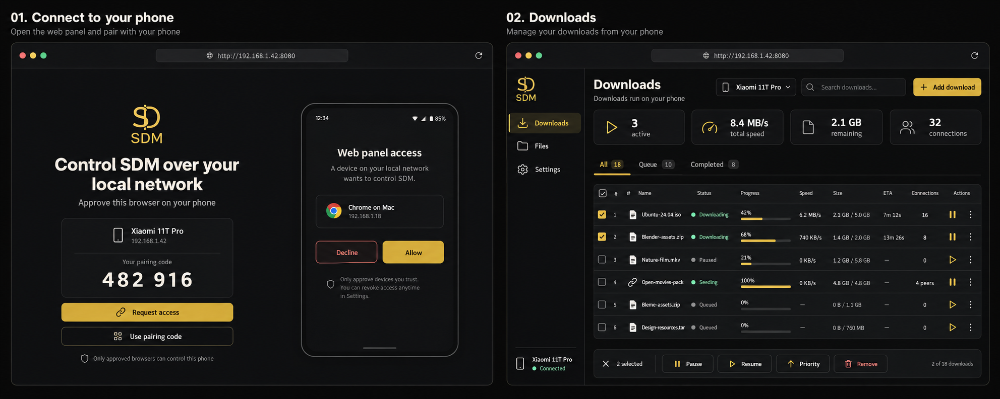
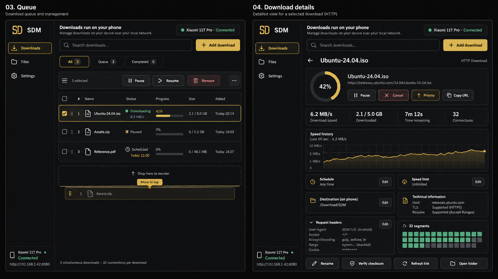
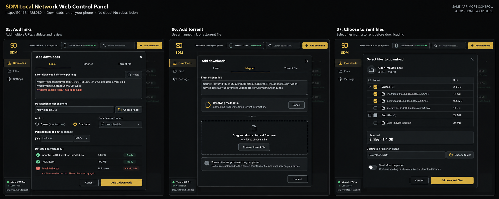
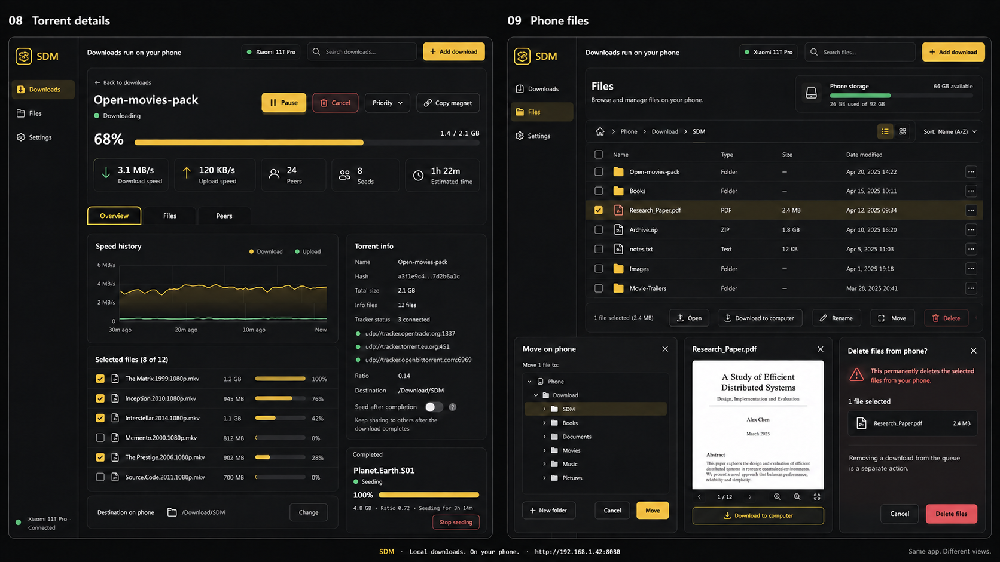
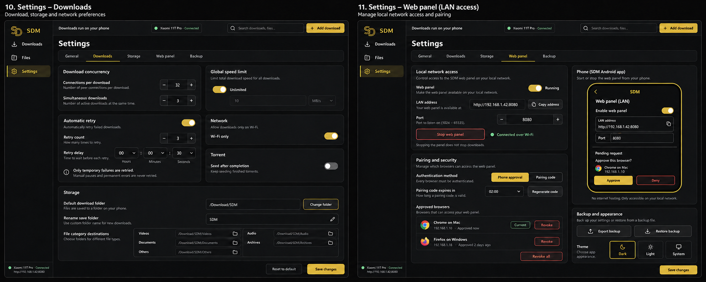
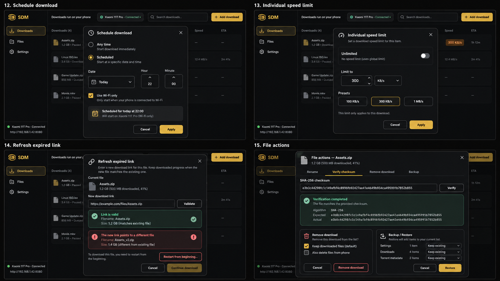
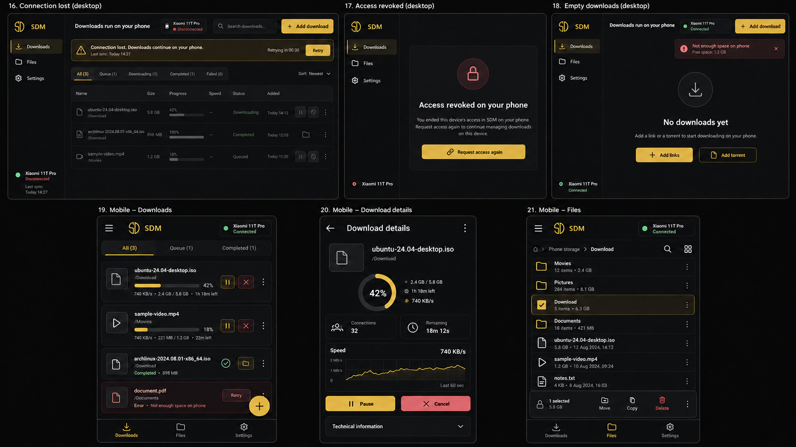

۷ مجموعهٔ تصویری، شامل ۲۱ صفحه و حالت. کنترل از مرورگر، دانلود و ذخیرهسازی روی گوشی.
این تصاویر طرح رابط هستند. اعداد، فایلها و نشانیها نمونهاند؛ جزئیات رفتار در سند طراحی مشخص شده است.

دریافت تصویر اصلی · روی تصویر کلیک کن تا در اندازهٔ کامل باز شود.





